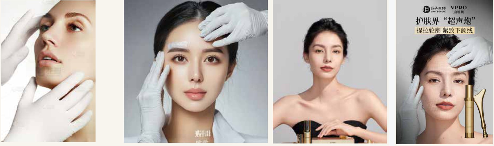
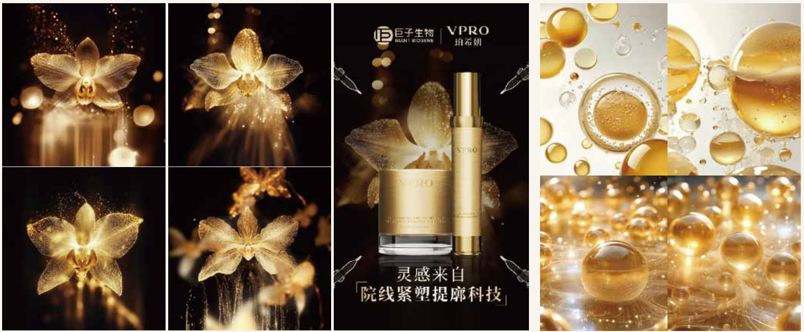

AI Visuals for a Beauty Brand
Visuals for a premium beauty brand from zero to one. Beauty demands a lot from the image: every new batch of images needs a professional photo team shooting models, then retouching, which is costly and slow. With AI, the AI generates partial material and people handle compositing and retouching; what gets saved is the shoot cost for every new product. The four cases below all follow this one logic.
How it works
AI generates partial material, people composite and retouch
BeforePhoto team shoots models → retouchAfterAI-generated partial material + our own models and products → composite and retouch
01Partial material + our own modelsAI + Human
- Models come from our own library, using the angles we have; what is missing goes to AI: hands in medical gloves, eyes, facial features, the angle we need
- Products are real photos placed on top; the bottle and label are never given to AI; compositing and retouching are all human
02Product images generated directlyAI
- Mood product images for promotion, generated directly from keywords, already usable
03Ingredient and efficacy materialAI
- The ingredient is orchid, with a "luxury gilded" feel; also cells, oil and water and similar imagery. AI generates the material, people blend the product and background and retouch
Cases




Tools
Midjourney · Jimeng · Photoshop